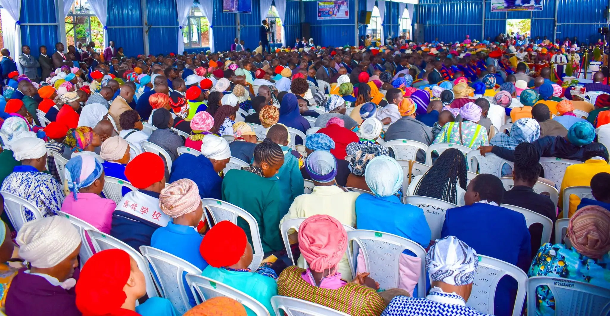
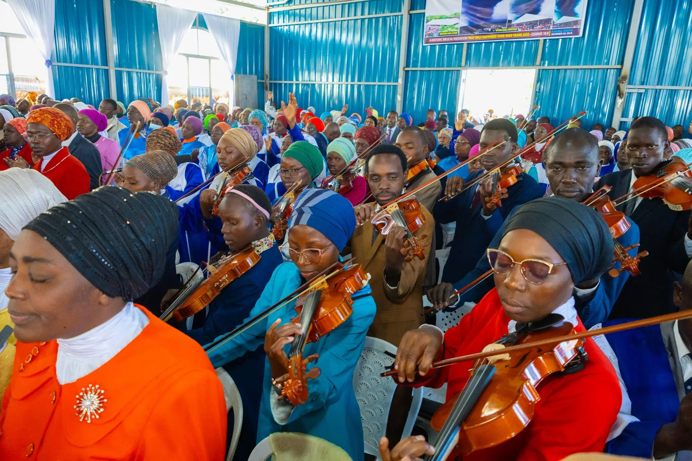

Ministry of Repentance and Holiness
Nandi County
Youth Conference 2026
Prepare the Way — The Messiah is Coming — Revelation 16:15
Conference begins in
00
Days
00
Hours
00
Minutes
00
Seconds
About The Conference
A Divine Gathering
About The Conference
A Divine Gathering
for Nandi Youth
A sacred space of revival, holiness, prayer, and encounter with THE LORD JESUS CHRIST — open to all youth across Nandi County.
6
Days
10+
Sessions
Free
Entry
Aug
10 – 15
What to Expect
Six Days of Encounter

Powerful Discipleship
Powerful nightly revival services that break chains and ignite hearts for GOD.

Powerful Worship
Deep, Spirit-led worship sessions that usher in the presence of GOD.
Powerful Prayer Sessions
Corporate prayer watches, intercession training, and nights of prayer.
Powerful Mentorship Program
A massive gathering of young believers from across all of Nandi County.
Speakers